Photo Gallery
趣味で撮影した写真集
Photo Gallery
大学生活の中でサークル活動や趣味として撮影してきた写真を紹介します。
カメラはNikon Z50をメインに、iPhoneを使用することもあります。
ポートレートや風景、街並み、自然の美しさを切り取ることが好きです。
人物写真 Portrait Photography
友人やイベントでの人物撮影、表情や雰囲気を大切にした作品集です。

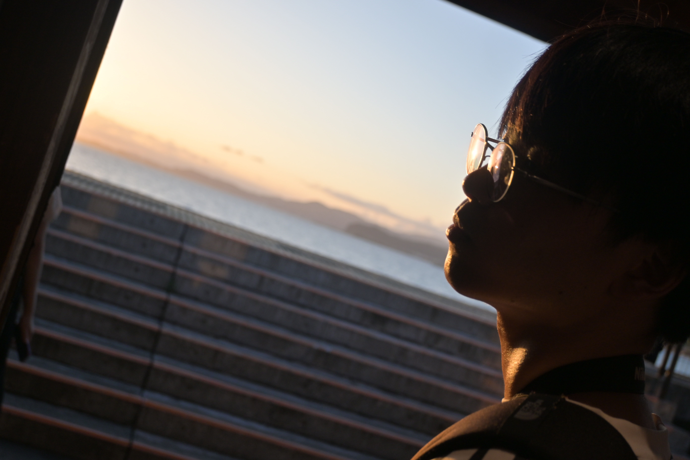
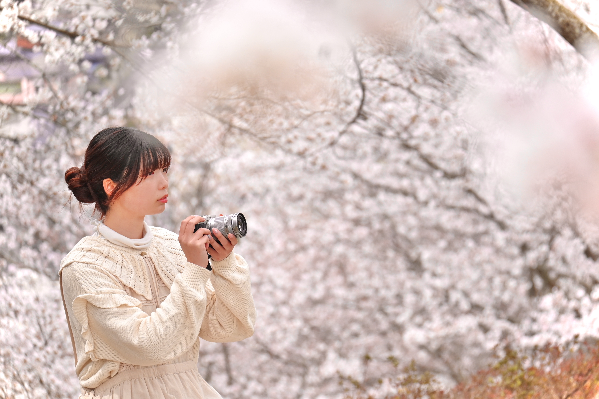
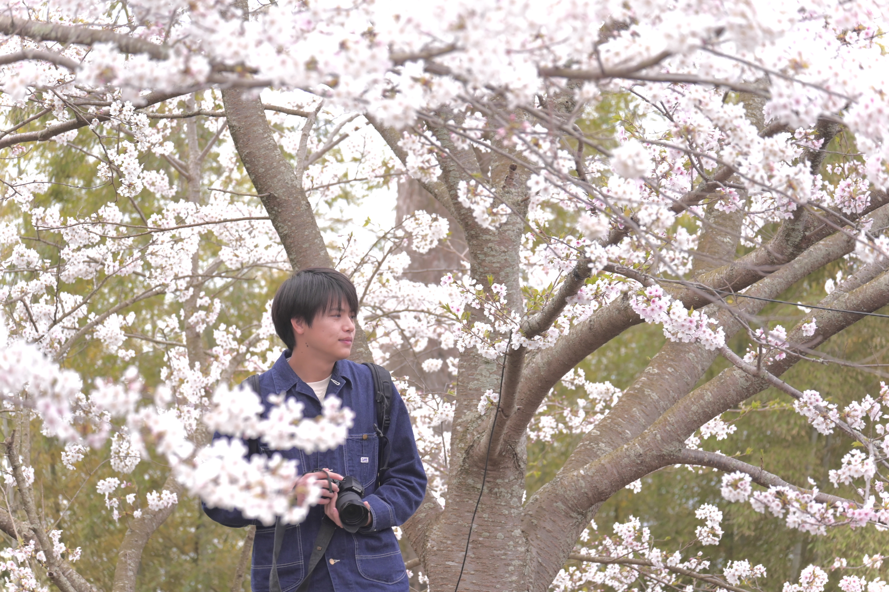
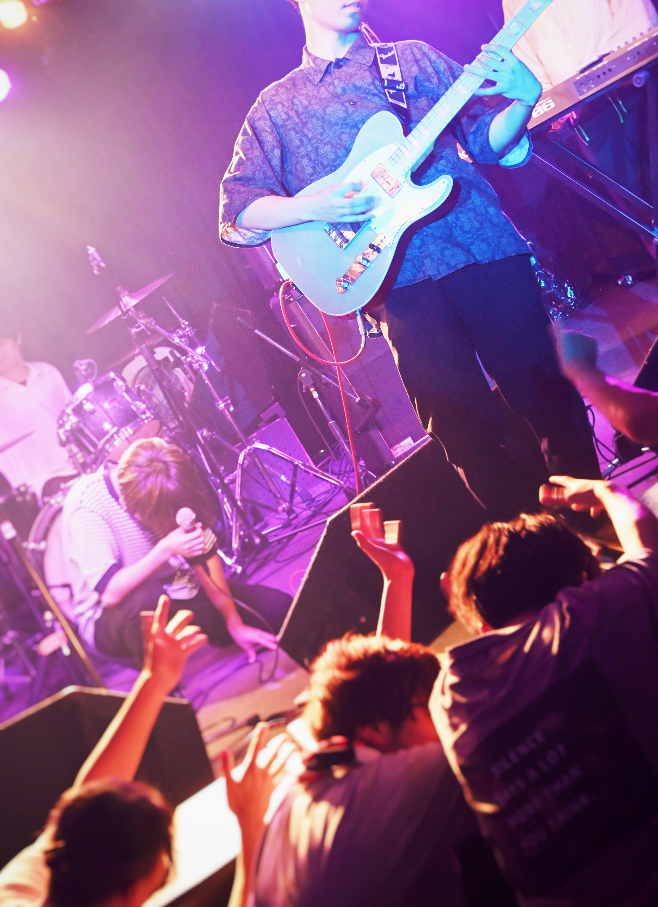
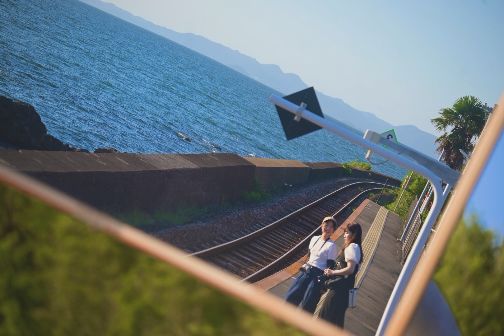
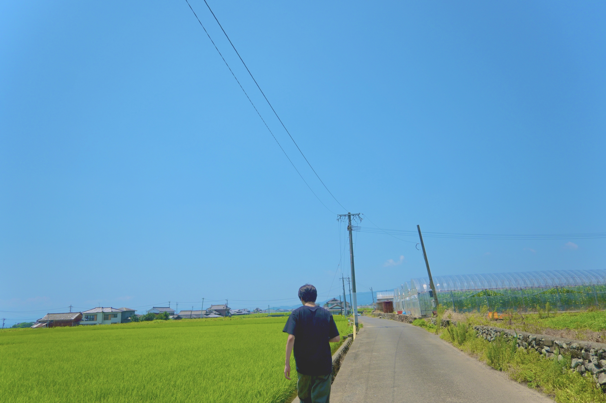
動物・自然・風景の写真 Landscape Photography
自然の美しさや建築物など、風景を中心とした作品集です。
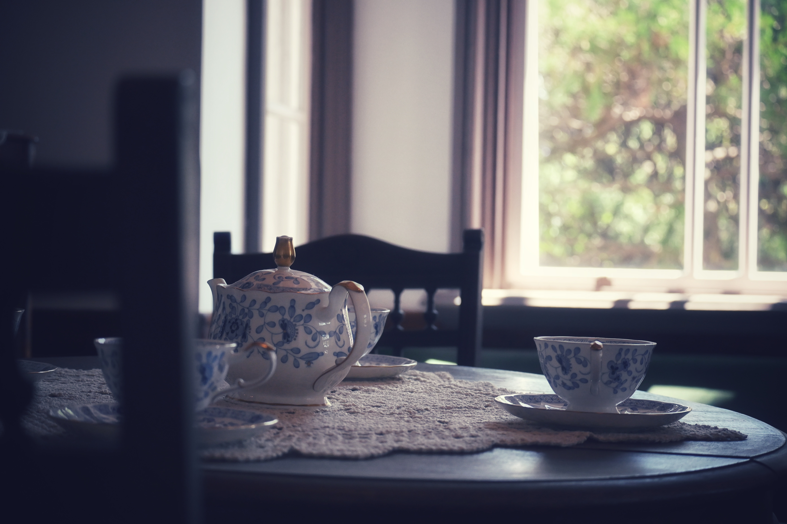
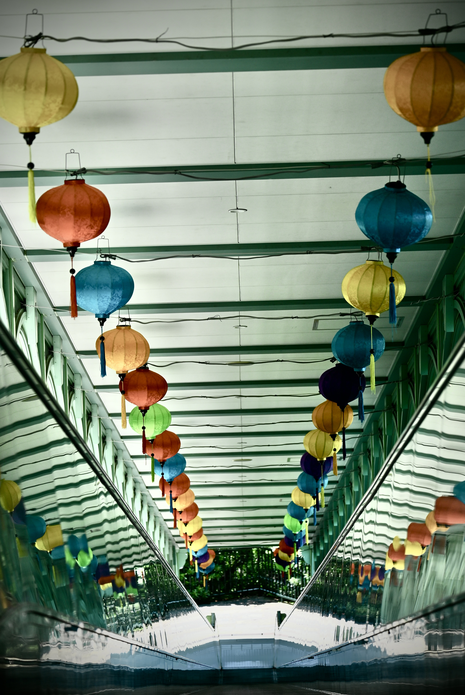
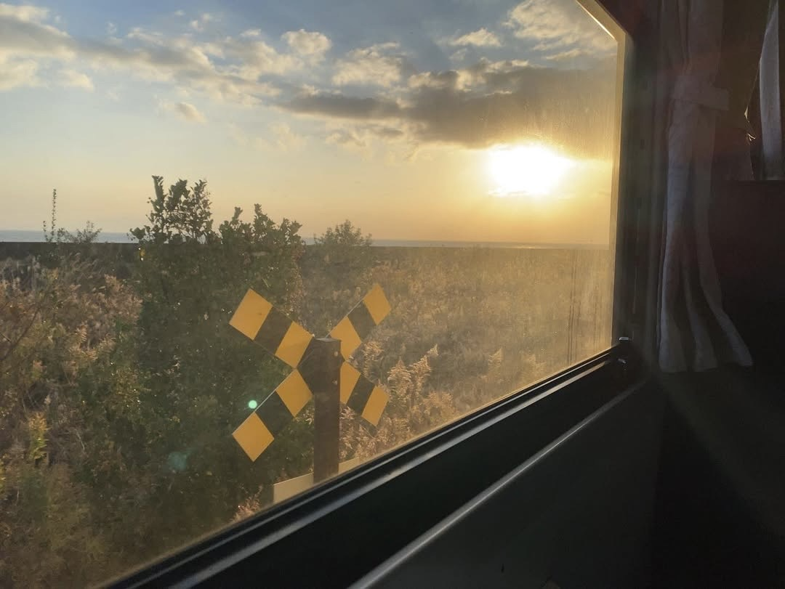
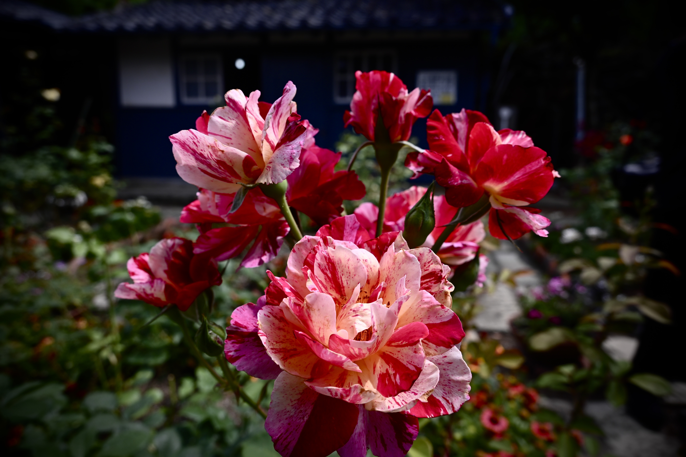
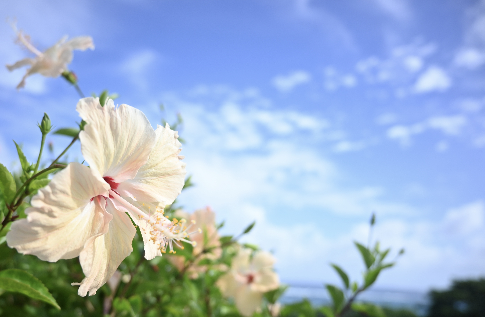
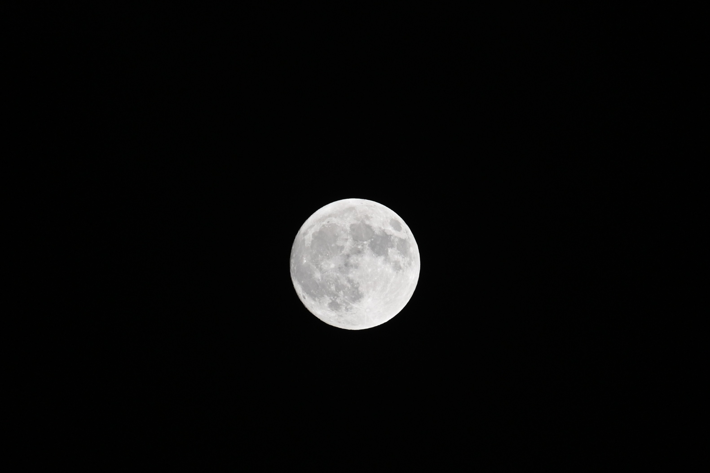

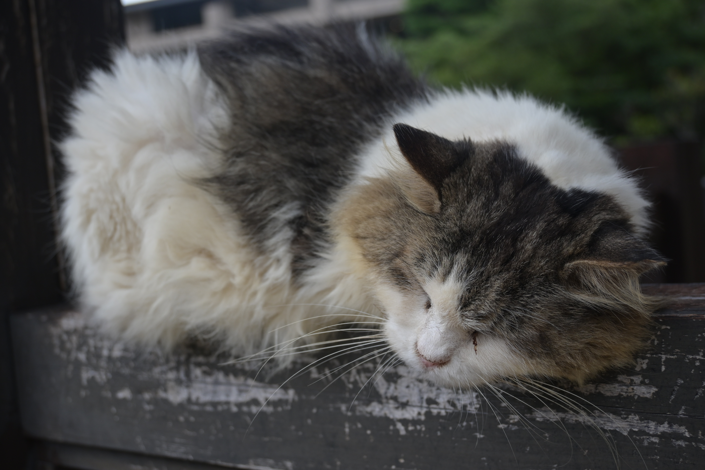